<!DOCTYPE html>
<html lang="en">
<head>
<meta charset="UTF-8">
<meta name="viewport" content="width=device-width,initial-scale=1">
<title>2.6 Surds — Real Numbers</title>
<meta name="description" content="Class 9 Mathematics · Real Numbers · 2.6 Surds">
<link rel="icon" href="data:image/svg+xml,<svg xmlns='http://www.w3.org/2000/svg' viewBox='0 0 100 100'><text y='.9em' font-size='90'>📘</text></svg>">
<link rel="stylesheet" href="../../../assets/book.css">
<link rel="stylesheet" href="https://cdn.jsdelivr.net/npm/katex@0.16.11/dist/katex.min.css" crossorigin="anonymous">
</head>
<body>
<header class="topbar">
<div class="topbar-in">
  <div class="crumb">
    <span class="c1"><a href="../../../index.html">Library</a> · <a href="../../index.html">Class 9 Mathematics</a></span>
    <span class="c2">Real Numbers · 2.6 Surds</span>
  </div>
  <a class="tb-btn" data-nav="prev" href="../../02-real-numbers/10-exercise-2.5/index.html" title="Exercise 2.5">←</a>
  <details class="drawer"><summary class="tb-btn" title="Sections in this chapter">☰</summary>
<div class="drawer-panel"><div class="dh">Real Numbers</div><a href="../01-chapter-opener/index.html">Chapter opener; 2.1 Introduction</a><a href="../02-rational-numbers-2.2/index.html">2.2 Rational Numbers</a><a href="../03-exercise-2.1/index.html">Exercise 2.1</a><a href="../04-irrational-numbers-2.3/index.html">2.3 Irrational Numbers</a><a href="../05-exercise-2.2/index.html">Exercise 2.2</a><a href="../06-decimal-representation-to-identify-irrational-numbers-2.3.6/index.html">2.3.6 Decimal Representation to Identify Irrational Numbers</a><a href="../07-exercise-2.3/index.html">Exercise 2.3</a><a href="../08-real-numbers-2.4/index.html">2.4 Real Numbers</a><a href="../09-exercise-2.4/index.html">Exercise 2.4; 2.5 Radical Notation</a><a href="../10-exercise-2.5/index.html">Exercise 2.5</a><a href="../11-surds-2.6/index.html" aria-current="page">2.6 Surds</a><a href="../12-exercise-2.6/index.html">Exercise 2.6</a><a href="../13-rationalisation-of-surds-2.7/index.html">2.7 Rationalisation of Surds</a><a href="../14-exercise-2.7/index.html">Exercise 2.7</a><a href="../15-scientific-notation-2.8/index.html">2.8 Scientific Notation</a><a href="../16-exercise-2.8/index.html">Exercise 2.8</a><a href="../17-exercise-2.9/index.html">Exercise 2.9</a><a href="../18-summary/index.html">Points to Remember</a><a href="../19-ict-corner/index.html">ICT Corner-1</a></div></details>
  <a class="tb-btn" data-nav="next" href="../../02-real-numbers/12-exercise-2.6/index.html" title="Exercise 2.6">→</a>
  <button class="tb-btn" data-theme-toggle title="Toggle light / dark" aria-label="Toggle light or dark theme">◐</button>
</div>
<div class="progress"><span style="width:20.1%"></span></div>
</header>
<main class="wrap">
<div class="sec-head">
  <p class="eyebrow"><a href="../index.html">Chapter 2 · Real Numbers</a></p>
  <h1>2.6 Surds</h1>
  <p class="sec-meta">Textbook pages 20–27 · 26 figures</p>
</div>
<article class="prose">
<p>Having familiarized with the concept of Real numbers, representing them on the</p>
<p>number line and manipulating them, we now learn about surds, a distinctive way of representing certain approximate values.</p>
<p>Can you simplify 4 and remove the symbol? Yes; one can replace 4 by the</p>
<figure class="fig">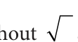</figure>
<p>number 2. How about \(\frac{1}{9}\) ? It is easy; without symbol, the answer is \(\frac{1}{3}\) . What about 0 01. ?. This is also easy and the solution is 0.1</p>
<figure class="fig"></figure>
<p>In the cases of , you can resolve to get a solution and make sure</p>
<p>that the symbol is not seen in your solution. Is this possible at all times?</p>
<p>Consider . Can you evaluate it and also remove the radical symbol? Surds are unresolved radicals, such as square root of 2, cube root of 5, etc.</p>
<p>They are irrational roots of equations with rational coefficients. A surd is an irrational root of a rational number. \(^{n} a\) is a surd, provided n , n 1, ‘a’ is rational.</p>
<p>Examples : 2 is a surd. It is an irrational root of the equation \(x = 2\). (Note that</p>
<p>\(x - 2 = 0\) is an equation with rational coefficients. 2 is irrational and may be shown as 1.4142135… a non-recurring, non-terminating decimal).</p>
<p>3 (which is same as \(\frac{1}{33}\) ) is a surd since it is an irrational root of the equation</p>
<p>\(x - 3 = 0\). ( 3 is irrational and may be shown as 1.7320508… a non-recurring, non-terminating decimal).</p>
<p>You will learn solving (quadratic) equations like \(x - 6x + 7 = 0\) in your next class. This</p>
<p>is an equation with rational coefficients and one of its roots is 3+ 2 , which is a surd.</p>
<p>Is \(\frac{1}{25} a\) surd? No; it can be simplified and written as rational number \(\frac{1}{5}\) . How about</p>
<p>\(\frac{16}{81}\) ? It is not a surd because it can be simplified as \(\frac{2}{3}\) . The famous irrational number p is not a surd! Though it is irrational, it cannot be</p>
<p>expressed as a rational number under the symbol. (In other words, it is not a root of any equation with rational co-efficients).</p>
<p>Why surds are important? For calculation purposes we assume approximate value as</p>
<div class="mathblock"><p>\(2 = 1 414\). , \(3 = 1 732\). and so on.</p><p>( \(2) = (1 414\). ) \(= 1 99936\). \(\ne 2\) ; ( \(3) = (1 732\). ) \(= 3 999824\). \(\ne 3\)</p></div>
<p>Hence, we observe that 2 and 3 represent the more accurate and precise values than their assumed values. Engineers and scientists need more accurate values while constructing the bridges and for architectural works. Thus it becomes essential to learn surds.</p>
<p>Progress Check</p>
<ul class="qlist">
<li><span class="mk">1.</span><span class="lt">Which is the odd one out? Justify your answer.</span></li>
<li><span class="mk">(i)</span><span class="lt">36, \(\frac{50}{98}\) , 1, 1 44. , 32, 120</span></li>
</ul>
<ul class="qlist">
<li><span class="mk">(ii)</span><span class="lt">7 , 48, 36, \(5 + 3\), 1 21. , \(\frac{1}{10}\)</span></li>
</ul>
<ul class="qlist">
<li><span class="mk">2.</span><span class="lt">Are all surds irrational numbers? - Discuss with your answer.</span></li>
<li><span class="mk">3.</span><span class="lt">Are all irrational numbers surds? Verify with some examples.</span></li>
</ul>
<h3 id="s-2-6-1-order-of-a-surd">2.6.1 Order of a Surd</h3>
<p>The order of a surd is the index of the root to be extracted. The order of the surd a</p>
<p>is n. What is the order of 99 ? It is 5. Surds can be classified in different ways:</p>
<ul class="qlist">
<li><span class="mk">(i)</span><span class="lt">Surds of same order : Surds of same order are surds for which the index of the root to</span></li>
</ul>
<p>be extracted is same. (They are also called equiradical surds).</p>
<p>For example, x, \(a \frac{3}{2,} m\) are all 2 order (called quadratic) surds .</p>
<p>2 nd</p>
<p>5, (x -2), (ab \(\frac{1}{)3}\) are all 3 order (called cubic) surds.</p>
<p>3 3 rd</p>
<p>3, 10, 6 and \(\frac{2}{85}\) are surds of different order.</p>
<ul class="qlist">
<li><span class="mk">(ii)</span><span class="lt"> Simplest form of a surd : A surd is said to be in simplest form, when it is expressed</span></li>
</ul>
<p>as the product of a rational factor and an irrational factor. In this form the surd has</p>
<ul class="qlist">
<li><span class="mk">(a)</span><span class="lt">the smallest possible index of the radical sign.</span></li>
<li><span class="mk">(b)</span><span class="lt">no fraction under the radical sign.</span></li>
<li><span class="mk">(c)</span><span class="lt">no factor is of the form a , where a is a positive integer under index n.</span></li>
</ul>
<figure class="fig">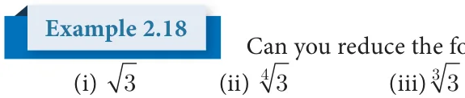</figure>
<p>Can you reduce the following numbers to surds of same order :</p>
<h4 class="callout-h" id="s-solution">Solution</h4>
<ul class="qlist">
<li><span class="mk">(i)</span><span class="lt">\(3 = \frac{1}{32}\) (ii) \(3 = \frac{1}{34}\) (iii) \(3 = \frac{1}{33}\)</span></li>
</ul>
<p>\(= \frac{6}{312} = \frac{3}{312} = \frac{4}{312}\)</p>
<div class="mathblock"><p>\(= = 3 = 3\)</p></div>
<figure class="fig">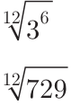</figure>
<div class="mathblock"><p>\(= = 27 = 81\)</p></div>
<p>The last row has surds of same order.</p>
<figure class="fig"></figure>
<p>. Express the surds in the simplest form: i) 8 ii) 192 . Show that &gt; .</p>
<h4 class="callout-h" id="s-solution">Solution</h4>
<p>1.</p>
<figure class="fig"></figure>
<p>2.</p>
<figure class="fig">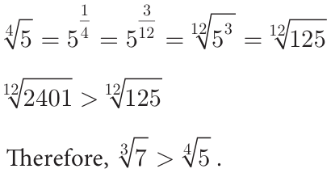</figure>
<ul class="qlist">
<li><span class="mk">(iii)</span><span class="lt">Pure and Mixed Surds : A surd is called a pure surd if its coefficient in its simplest form</span></li>
</ul>
<p>is 1. For example, 3 , 6 , 7 , 49 are pure surds. A surd is called a mixed surd if</p>
<p>its co-efficient in its simplest form is other than 1. For example, 5 3 , 2 5 , 3 6 are mixed surds.</p>
<ul class="qlist">
<li><span class="mk">(iv)</span><span class="lt">Simple and Compound Surds : A surd with a single term is said to be a simple surd.</span></li>
</ul>
<p>For example, 3 , 2 5 are simple surds. The algebraic sum of two (or more) surds is called a compound surd. For example, 5 +3 2, \(3 - 2 7\), \(5 - 7 2 + 6 3\) are compound surds.</p>
<ul class="qlist">
<li><span class="mk">(v)</span><span class="lt">Binomial Surd : A binomial surd is an algebraic sum (or difference) of 2 terms both of</span></li>
</ul>
<p>which could be surds or one could be a rational number and another a surd. For</p>
<aside class="sidenote"><p>are binomial surds.</p></aside>
<figure class="fig">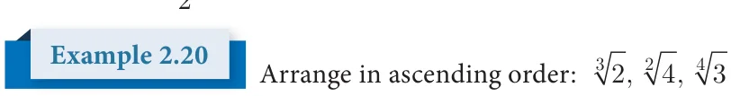</figure>
<aside class="sidenote"><p>2, ,</p></aside>
<h4 class="callout-h" id="s-solution">Solution</h4>
<p>The order of the surds 2, and are 3, 2, 4.</p>
<div class="mathblock"><p>L.C.M. of 3, 2, \(4 = 12\).</p></div>
<p>\(2 =\)  \(\frac{14}{23=212}\)    \(= 2 = 16\) ; \(4 =\)  \(\frac{16}{42=412}\)    \(= 4 = 4096\)  </p>
<p>   </p>
<div class="mathblock"><p>\(3 =\)  \(\frac{13}{34=312}\)    =</p></div>
<figure class="fig"></figure>
<p>The ascending order of the surds</p>
<p>that is, 2, 3, 4 .</p>
<h3 id="s-2-6-2-laws-of-radicals">2.6.2 Laws of Radicals</h3>
<p>For positive integers m, n and positive rational numbers a and b, it is worth remembering the following properties of radicals:</p>
<figure class="fig table-fig wide"></figure>
<p>We shall now discuss certain problems which require the laws of radicals for simplifying.</p>
<figure class="fig"></figure>
<p>Express each of the following surds in its simplest form (i) 108</p>
<p>and find its order, radicand and coefficient.</p>
<h4 class="callout-h" id="s-solution">Solution</h4>
<figure class="fig"></figure>
<p>2 108 2 54 3 27 (Laws of radicals - ii) 3 9 3 3 ( Laws of radicals- i) 1 order \(= 3\); radicand \(= 4\); coefficient \(= 3\)</p>
<figure class="fig">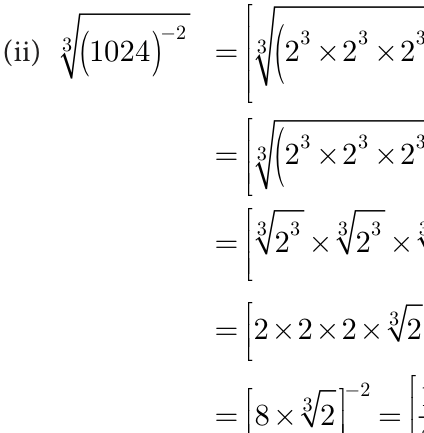</figure>
<p>2 1024 2 512 2 256 [Laws of radicals - (i)] \(2 128 - 2 64\)   [Laws of radicals - (ii)] 22 3216</p>
<p>=  \(\times \times \times\)  [Laws of radicals - (i)] 22 84</p>
<div class="mathblock"><p>=  \(\times\)  \(- =\)  \(\frac{1}{8}\)  \(\times\)   \(\frac{1}{32}\)  \(2 21 = \frac{131}{644}\)</p></div>
<p>order= 3; radicand \(= \frac{1}{4}\) ; coefficient \(= \frac{1}{64}\) (These results can also be obtained using index notation).</p>
<h4 class="callout-h" id="s-note">Note</h4>
<p>Consider the numbers 5 and 6. As \(5 = 25\) and \(6 = 36\)</p>
<p>Therefore, 26, 27, 28, 29, 30, 31, 32, 33, 34, and 35 are surds between 5 and 6.</p>
<div class="mathblock"><p>Consider \(3 2 = 3 \times 2 = 18\) , \(2 3 = 2 \times 3 = 12\)</p></div>
<p>Therefore, 17, 15, 14, 13 are surds between 2 3 and 3 2 .</p>
<h3 id="s-2-6-3-four-basic-operations-on-surds">2.6.3 Four Basic Operations on Surds</h3>
<ul class="qlist">
<li><span class="mk">(i)</span><span class="lt">Addition and subtraction of surds : Like surds can be added and subtracted</span></li>
</ul>
<p>using the following rules:</p>
<div class="mathblock"><p>\(a b \pm c b =\) (a \(\pm\) c) b, where \(b &gt; 0\).</p></div>
<figure class="fig">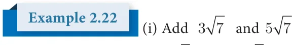</figure>
<aside class="sidenote"><p>. Check whether the sum is rational or . Is the answer rational or irrational?</p></aside>
<h4 class="callout-h" id="s-solution">Solution</h4>
<figure class="fig"></figure>
<figure class="fig"></figure>
<p>= ( + ) . The answer is irrational. = ( - ) . The answer is irrational.</p>
<figure class="fig">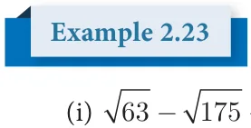</figure>
<p>Simplify the following:</p>
<ul class="qlist">
<li><span class="mk">(ii)</span><span class="lt">\(2 40 + 3 625 - 4 320\)</span></li>
</ul>
<h4 class="callout-h" id="s-solution">Solution</h4>
<figure class="fig">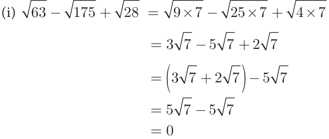</figure>
<figure class="fig">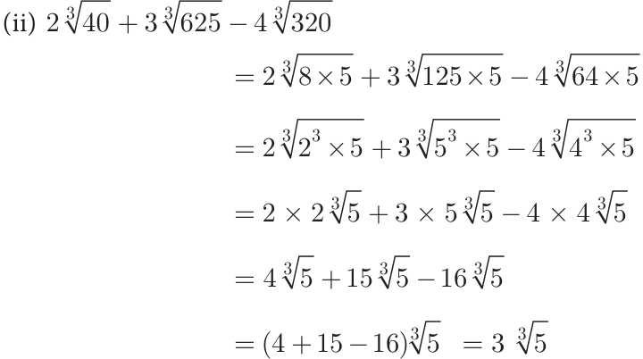</figure>
<ul class="qlist">
<li><span class="mk">(ii)</span><span class="lt">Multiplication and division of surds</span></li>
</ul>
<p>Like surds can be multiplied or divided by using the following rules:</p>
<figure class="fig table-fig wide"></figure>
<figure class="fig">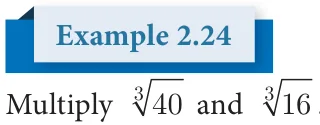</figure>
<h4 class="callout-h" id="s-solution">Solution</h4>
<figure class="fig">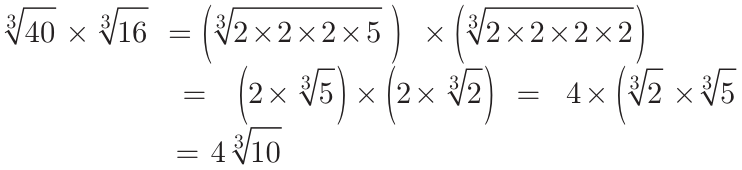</figure>
<div class="mathblock"><p>) \(= 4 \times 2 \times 5\)</p></div>
<figure class="fig"></figure>
<p>Compute and give the answer in the simplest form: 2 ´ ´</p>
<h4 class="callout-h" id="s-solution">Solution</h4>
<figure class="fig wide"></figure>
<div class="mathblock"><p>\(2 72 \times 5 32 \times 3 =\) ( \(\times\) ) \(\times\) ( \(\times\) ) \(\times\)</p></div>
<p>\(= \times \times \times \times \times \times\)</p>
<div class="mathblock"><p>\(= 3600 \times\)</p><p>\(= 7200\)</p></div>
<figure class="fig"></figure>
<h4 class="callout-h" id="s-solution">Solution</h4>
<p>\(\frac{8}{66} = \frac{8}{1} _{6}\) (Note that 18 is the LCM of 6 and 9) 6</p>
<div class="mathblock"><p>\(= 8 _{3}\) (How?)</p></div>
<p>6  \(^{2}\)    Activity \(- 1 =\) 6 \(\frac{8}{3} \frac{1}{18}\)  (How ?) =  \(\frac{8 \times\) 8}{6 \(\times 6 \times\) 6} \(\frac{1}{18}\) Is it interesting to see this pattern ?</p>
<div class="mathblock"><p> 3 \(\frac{1}{18} ^{1}\)</p></div>
<p>=  \(\frac{8}{27}\)  \(\frac{1}{18} =\)  \(\frac{2}{3}\)   =  \(\frac{2}{3} =^{6} ^{6} \frac{2}{3} 4 \frac{4}{15} = 4 \frac{4}{15}\) and \(5 \frac{5}{24} = 5 \frac{5}{24}\)   Verify it. Can you frame 4 such new surds?</p>
<figure class="fig table-fig wide"></figure>
</article>
<nav class="pager"><a class="" data-nav="prev" href="../../02-real-numbers/10-exercise-2.5/index.html"><span class="dir">← Previous</span><span class="t">Exercise 2.5</span><span class="ch">Real Numbers</span></a><a class="nx" data-nav="next" href="../../02-real-numbers/12-exercise-2.6/index.html"><span class="dir">Next →</span><span class="t">Exercise 2.6</span><span class="ch">Real Numbers</span></a></nav>
</main><footer class="site">Generated from the source textbook PDFs · text, figures and exercises belong to their respective publishers.</footer><script defer src="https://cdn.jsdelivr.net/npm/katex@0.16.11/dist/katex.min.js" crossorigin="anonymous"></script>
<script defer src="https://cdn.jsdelivr.net/npm/katex@0.16.11/dist/contrib/auto-render.min.js" crossorigin="anonymous"
  onload="renderMathInElement(document.body,{delimiters:[
    {left:'\\(',right:'\\)',display:false},
    {left:'$$',right:'$$',display:true},
    {left:'\\[',right:'\\]',display:true}],throwOnError:false,ignoredTags:['script','noscript','style','textarea','pre','code']})"></script>
<script src="../../../assets/book.js"></script>
</body>
</html>
